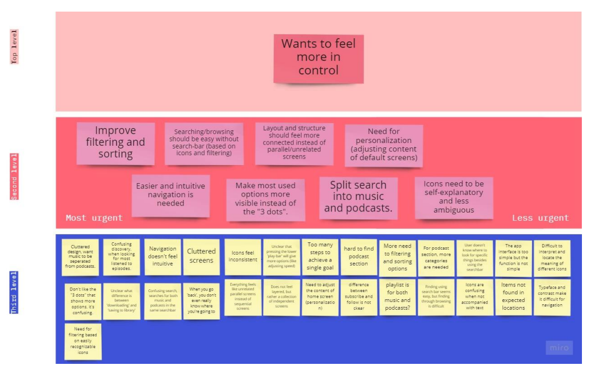
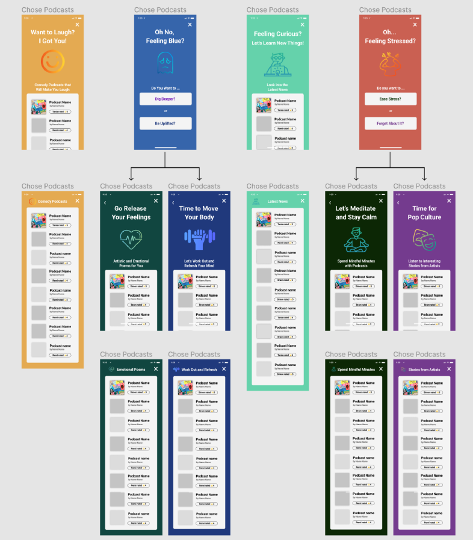
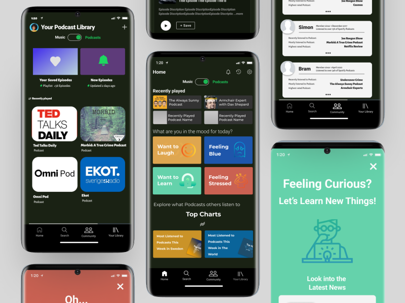

A Revamped Podcast Section

Elevating Spotify's Podcast Experience: Applying the Double Diamond Framework to User-Centric Design
For a project at Kungliga Tekniska Högskolan (KTH) in Stockholm, Sweden, In this project, we employed the Double Diamond framework to revamp Spotify's podcast section. Our design approach was goal-oriented, primarily centered on uncovering and meeting user expectations. The subsequent sections delve into the various phases within the Double Diamond design process and outline the methods we utilized for each phase.
Our project was centered on enhancing the podcast section of Spotify, and Thinking Aloud emerged as the natural choice to delve into users' thought processes and identify pain points within the Spotify user experience. Thinking Aloud also offered the advantage of evaluating design perception without disrupting the user's thought process, in contrast to other evaluation methods like cooperative evaluations. Moreover, this method was straightforward to set up, time-efficient, and cost-effective, aligning well with our project goals and task limitations.
Our approach involved an initial interview to establish a baseline understanding of users, followed by Think Aloud tests, where one team member conducted the interview while another recorded and took notes. This collaborative approach ensured a smooth testing process and comprehensive note-taking during the Think Aloud sessions. We were able to explore users' podcast listening habits, their preferences for other podcast applications, and their specific pain points while using Spotify. These interviews provided valuable insights into their decision-making processes, making it clear why they chose Spotify or not.

After gathering a large volume of qualitative data from our interviews and Think-Aloud sessions, we needed a structured way to uncover patterns and prioritize the most pressing user needs. To achieve this, our team created an affinity diagram, clustering sticky notes with observations, quotes, and insights into emerging themes. This method allowed us to visually organize scattered feedback into meaningful categories, such as navigation difficulties, content discovery frustrations, and desire for community features. By grouping insights collaboratively, we ensured that no single perspective dominated the analysis, and that the findings reflected a collective understanding of the users’ pain points.
The affinity diagram was especially valuable because it revealed relationships between issues that might otherwise have been overlooked. For example, we noticed that complaints about “cluttered navigation” frequently overlapped with frustrations about finding new podcasts—indicating that discoverability was as much a design problem as a content problem. These insights shaped our problem definition going forward, helping us set a clear design goal: to streamline podcast discovery and create a more supportive, intuitive navigation experience.

To assess the prototype's usability, efficiency, and effectiveness, cooperative evaluation was chosen as the formative evaluation method to gather immediate user feedback. This approach involved users performing tasks related to the prototype's core functionality while providing feedback on their thought process and interactions. The dynamic and interactive nature of this method allowed for in-depth discussions, clarifications, and alternative suggestions during the evaluation process.
Users positively responded to the separation of music and podcast sections in the prototype, appreciating the toggle button and layout separation. However, they had questions and concerns about the social navigation component, leading to design improvements, such as the introduction of sub-tabs within the community section. The mood personalization feature was well-received for its intuitiveness and ease of use. Users also provided insights into its potential enhancements, such as expanding mood coverage and applying mood filtering in search and library tabs.

After successfully completing the double-diamond stages, we are proud to unveil our final Spotify interface prototype. Our project aimed to enhance the Spotify Podcast section based on user research during the discovery phase, which highlighted the need for improved navigation and control. The final prototype includes Home, Community, Library, and Search screens, each with Podcast and Music versions. The Home screen features mood-based recommendations, while the Community screen includes Activity and Following sections. The Library and Search screens have layouts tailored for Podcasts. We developed three key strategies: